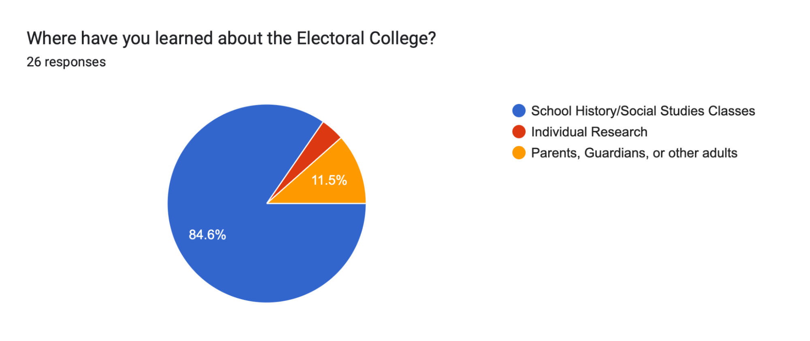
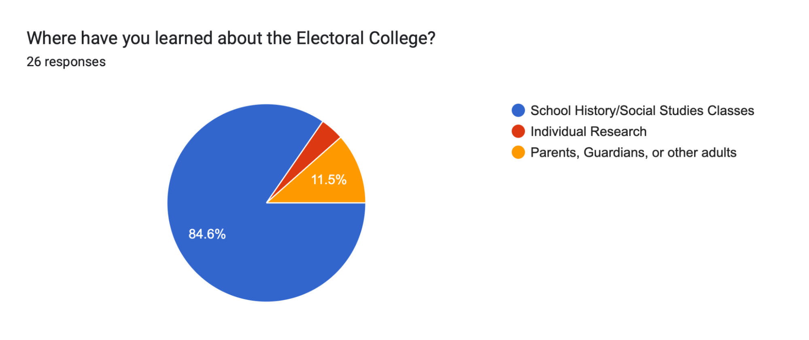

ELECTORAL COLLEGE NECESSITY?
The Problems with the Electoral College
JD Burch
Reading and Writing for the College Bound, Period 3
South Lyon East High School
Abstract
When the presidential election results reach the people, and a presidential candidate who failed to secure more than half of the nation’s votes wins the election, a maelstrom of confusion and anger erupts across America. Throughout the history of our nation, presidents generally have been elected with the majority of popular votes; however, intermittently (or more frequently, as of late) a president can win the election without a majority of Americans voting for them, owing to the vast imperfections in the Electoral College. This essay analyzes the flaws of the electoral system in America by presenting past presidential elections where a president did not carry a majority of national votes in order to demonstrate why the current Electoral College should be removed. Counter arguments to the claim will be thoroughly examined and presented in the fairest of light, then copiously refuted with evidence and reasoning. Additionally, current measures to improve, correct, or abolish the Electoral College will be addressed. Although this topic is inherently political, this essay relies only on the facts of American history and politics, and will attempt to remain as nonpartisan as possible.
Keywords: Electoral College, popular, vote, president, election, flaws
Thesis
It is the position of this paper that the Electoral College in its current state should be abolished and replaced with a voting system that fairly represents the will of the people based on the national votes for president; however, in fairness to opposing views, counter arguments to the claim will be addressed and explained. After these views are presented, each counter argument will be refuted with evidence.
Historical Overview of Past Elections
Throughout American history, there have been five (5) instances of a president winning the election without the majority of national votes, meaning less than half of the nation wanted him as president. In 1824, John Quincey Adams became president after a three- way stalemate in the Electoral College. Because none of the contenders earned a majority of electoral votes, the House of Representatives was burdened with the final decision. In a very suspicious situation known as the Corrupt Bargain, Speaker of the House Henry Clay helped secure the presidency for Quincy Adams, and was quickly given the title of Secretary of State once Quincy Adams became president.
In 1888, Benjamin Harris was elected president of the United States with a majority of electoral votes, but lost the popular vote by 89,293 votes. Harris was able to secure the Presidency by taking the swing-state of New York by 14,373 votes. In 1878, Rutherford B. Hayes became the president of the US by a single electoral vote; yet, once again, America as a whole did not want this candidate as president, as he lost the national popular vote by 254,694 votes.
Twice in the last 30 years there has been an electoral yet not popular president. In 2000, George W Bush became president due to one single state, Florida. Although his opponent, Al Gore, had over 500,000 more popular votes across the nation, Bush, due to winning the state of Florida by only 537 votes, became president. This election was incredibly significant because of the paucity of votes Bush needed to win. After the election, the Democrats called for a recount of votes. The number was so low that regular voting errors could swing the election. “So, when Harris certified Bush the winner, the Democrats sued to force a recount in a few counties where they thought it would help them overcome Bush's narrow margin.” (Elving, 2018) Unfortunately for the Democrats, the courts blocked the recounts, effectively securing Bush’s presidency, sealing the decision of the forty-third president of the United States.
The most recent electoral shortcoming is quite possibly the most impactful election in recent American history. In 2016, Donald J. Trump ran against Hillary Clinton, and the race was tight. America’s ideological politics were at a breaking point, and due to Trump’s personality and manipulation of the media, his supporters were becoming more radical by the minute. As the election was unfolding across America, the projected winner kept switching as more states confirmed their votes. Ultimately, due to three swing states, Donald Trump became the forty-fifth president. This particular failure in the voting system had some of the greatest impacts, as this election decided who would deal with major global issues such as greater tensions with China, the initial handling of the Coronavirus pandemic, and the effects of COVID on the economy. The fact that over ten percent (10%) of the nation’s presidents have been elected without a majority of Americans desiring him in office is astounding, and is without a doubt the most major flaw of the Electoral College.
Counter Arguments with Refutations
When our great nation was being formed, and our constitution was being drafted, there were many different ideas between the framers of the constitution. Many framers of the constitution had the nation as a whole in mind; however, many also were solely focused on regional promotion in disfavor of national promotion. By the way the Electoral College is structured, states receive votes based on their congressional size. “[The ⅗ compromise] meant Southern states, with their huge enslaved populations and the representatives that went with them, locked in an advantage.” (Abdelfatah & Arablouei, 2020) The southern states enacted this purposefully in order to grab as much power as possible, since they had a lower population of white voters. Many people, such as Gouverner Morris, believed that the ⅗ compromise was morally and politically wrong.. If slaves couldn’t leave property of their own free will, then why should they have been able to count for votes? (The Union Wasn't Worth the Three-Fifths Compromise on Slavery, 2013) His point stood valid at the time; however, due to the discrepancy between the Founders, it just couldn’t be accepted to keep the nation together.
Obviously, slavery is no longer a concern in our nation. America moved past that dark time, and improved its ethics; however, the focus on regional politics rather than national unity continued throughout history to this day. On April 9, 1865, General Robert E. Lee--The head Confederate General--capitulated and ended the Civil War. After the war, the United States brought all of the confederate countries back into the nation, but slavery became illegal after Lincon’s Emancipation Proclamation. (Plante, n.d.) Although the great moral injustice that was slavery was no more, the precedents and laws that were set as an account of slavery stood. The Electoral College is partially a result of the regional politics that led to the three-fifth’s compromise, and therefore it should not stand today. The fact that the Electoral College still stands means that our nation still supports the systems built to ensure slaveholding white men had power. (Codrington & Lau, 2020) Aside from just the racial aspect, the Electoral College still promotes general regional politics, which is fundamentally unamerican.
Although the nation was built with regional compromises, as is normal with a republic, that should be changed to support the most amount of people possible. However, now the dynamic has changed. At the founding of the nation, the Articles of Confederation originally loosely grouped the states together into a very loose confederacy nation. They failed, and we made the US Constitution, as every American should know. (Purdie, n.d.) However, at the founding of the US Constitution our nation was still just the loose group of states, and concessions did need to be made. The north was all industry, and the south was all agriculture. This led to an interesting dynamic, because both wanted power, and they shared nothing in common beyond being in the same country. (Barton & Pierre, 2023) Setting aside that the compromises were rooted in racism, they were necessary at the time; however, this is not the case in today's world. The Civil War ended; industry spread to the south. “The most notable New South initiative was the introduction of textile mills in the South. Beginning in the early 1880s, northern capitalists invested in building textile mills in the southern Appalachian foothills of North Carolina, South Carolina, and Georgia.” (Hine, n.d.) With this movement, the nation started becoming very interconnected, and presidents started being more beneficial for everybody. As the nation kept growing and expanding west, more regional issues arose, but most ended up being resolved. Regional issues more or less took a back seat--parties started electing presidents based on ideology. No longer could a president from the North completely disenfranchise a majority of southern voters. “Republicans and Democrats are more divided along ideological lines – and partisan antipathy is deeper and more extensive – than at any point in the last two decades.” (Political Polarization in the American Public, 2014) If regional politics are no longer an issue anymore, favored instead by ideological politics, then why should the Electoral College, a system built specifically as a compromise between regions, be upheld? The reality is that it shouldn't. Politics is ridiculously complicated and abstruse in all aspects, and the law is intricate and spans literal centuries of debate and modification. Just as other parts of the US Constitution have been adapted, so should this. The object of the electoral system is to elect a president that the nation wants. As long as we are using the Electoral College system, which is undeniably rooted in racism and slavery, that favors regional politics which are no longer existent in modern politics, we have no hope to improve and build upon it for future generations.
At the Constitutional Convention, framers of the US Constitution raised one major issue that led to the Electoral College: most of the new nation was uneducated. “A small number of persons, selected by their fellow-citizens from the general mass, will be most likely to possess the information and discernment requisite to such complicated investigations.” (Hamilton, 2023) Although this does not directly state that the elitist, white, and rich founders were trying to minimize regular people’s votes, it certainly implies as such. Ultimately, they were worried that the common people would not be educated enough to make a proper decision--a sentiment shared by members of both sides. Thomas Jefferson was also of the opinion that there should be measures against total power to the people to prevent anarchy. At the time, he believed that a Republic would ensure that proper presidents would be elected. (Jefferson, n.d.) This reasoning made sense then. Generally, schooling only went up to the eighth grade, unless families were fortunate enough to go to a university. This higher level of education was only really available to rich white families, which there were a dearth of across the nation; however, very occasionally there were assiduous people who would fight extremely hard to earn enough money to pursue higher education, like Hamilton. These educated individuals were almost always politicians in addition to their main focus of study. They had the reasoning skills necessary to make informed decisions, which is why the framers of the constitution implemented the electoral system. If these educated people were the ones who actually cast the votes, then there would be a much less chance of a poor president being elected.
This point is quite valid at the time of the framing of the US Constitution; however, in today’s modern and technological world, education among the general population is an antipode to how it was in 1790. In fact, every single state has a compulsory age requirement (Table 5.1. Compulsory School Attendance Laws, Minimum and Maximum Age Limits for Required Free Education, by State: 2017, n.d.). This legally required schooling, which involves social studies and government classes, informs all students about the system of government for which they are voting for and leads them to make informed decisions, which was not commonplace at the time of the framing of the US Constitution. “The high school completion rate in the United States for people aged 25 and older increased from 87.6% in 2011 to 91.1% in 2021.” (Census Bureau Releases New Educational Attainment Data, 2022) As seen in today’s society, over 90% of Americans have graduated from high school, which is already a much greater standard than at the time of the framing! Therefore, the reasoning of Americans not being educated is invalid. On the contrary, Americans are more informed than ever about politics and candidates, which, when paired with their education, leads them to pick candidates that they truly want and that will not be terrible presidents (for them, at least). People still argue that the people are not fit to be able to directly vote for president; however, those people are extreme radicals and unfortunately the ones who stand to gain from people not voting.
On top of general education, the internet and social media has greatly increased the amount of information that people can see in regards to politics. According to the Pew Research Center, “About one-in-five U.S. adults say they get their political news primarily through social media.” (Mitchell, 2020) Additionally, they recorded that 33% of adults consume news through news websites. The internet providing this access point to news greatly increases political literacy throughout all of America. The fact that those individuals are at all interested in politics and participating in the elections is still advantageous to the cause of our country, and supports the fact that Americans are indeed more educated about politics, and, therefore, the Electoral College is no longer necessary. The fact that they are getting news that otherwise may not have reached them is vital to maintaining our system of democracy.
Although social media can be a useful tool, it can also be used to weaponize people who will always and undeniably support a candidate. “Widespread social media use has fueled the fire of extreme polarization, which, in turn, has contributed to the erosion of trust in democratic values; elections; and even scientific facts, such as the need for vaccination in the face of a lethal pandemic.” (Barrett, 2021) Unfortunately this is certainly true, but it is the setting of the current world. Social media is not going anywhere, so it must be used in the best way it can. The New York Times avers that “As big social networks made connecting people with brands a priority over connecting them with other people, some users have started seeking community-oriented sites and apps devoted to specific hobbies and issues.” (Chen, 2023) Later on in the article, after detailing the recent shift of social media, the article predicts that social media will be around in this form for decades and decades to come. The polarization of politics through these means is a very real and scary possibility, one that our nation must overcome, and one that our nation must use. Taking advantage of this shifting of social media has led people to become more informed in politics. Jeff Jackson is a democratic senator from Virginia, and he runs a TikTok account where he details inner workings of Congress--such as details about congresspeople, or the status of laws--and brings previously hard-to-obtain knowledge directly to the American people. In one of his most popular videos, he describes in depth about why the US almost almost defaulted on their debts, and he explains how the nation could avoid it. (Jackson, 2023) This use of social media is very positive, and brings real knowledge to the American people. Back when the constitution was formed, most Americans barely had access to the basic laws of our country; today, with the internet and social media at America’s fingertips, everyday people have a much greater understanding of our government, our politics, and how the country can move forward. Therefore, it is simple to deduce that keeping the age-old system of the Electoral College makes no sense, as it only provides corrosion and resistance to our government working as effectively as it can, with the will of the people first and foremost in mind.
Many historians argue that the Electoral College does positively help the nation by making sure candidates campaign in many places, not just urban cities. “Without [The Electoral College]... presidents would be selected either through the domination of one populous region over the others or through the domination of large metropolitan areas over the rural ones.” (Kimberling, 2012) Their claim states that if candidates only campaigned in cities, then urban needs would be the only needs met by candidates when they are elected, and corollary-like, rural people would be subject to the abject, in theory, policies of the urban-supporting president. At the start of the nation, there were only twenty four areas in the country considered urban. These urban areas contained 201,655 people, which is only approximately eight percent of the nation’s population. (Gibson, 1998) Therefore, it is reasonable to understand why this was not a major factor of the initial creation of the Electoral College. However, nowadays, the spread of people is much different. As of 2020, with the results of the 2020 census, eighty percent of Americans live in areas classified as Urban (although it is worth noting that the qualifications for an area to be classified as urban is somewhat amorphous, it is not amorphous enough to be of significance). (Nation's Urban and Rural Populations Shift Following 2020 Census, 2022) The fact that four fifths of Americans now live in urban areas does give credence to the point. If campaigners only focused on these areas, twenty percent of the population would, in theory, be left out. The Electoral College provides a barrier to that action by grouping urban and rural voters together in the state voting, which could allow for more representation.
This argument has credence, as twenty percent of Americans are no small part; however, if past elections are examined, twenty percent is peanuts compared to the amount of people who are unsatisfied with current elections for other reasons. Take the most recent election, for example. According to the Cook Political Report, in 2020, Joseph Biden earned 81,282,91 votes to Donald Trump’s 74,223,369 votes. (Walter, n.d.) If this election had solely been a popular vote election, the presidential results would have been the same, with Joseph Biden winning with 52.3% of the votes. Commensurately, this leaves the other 47.7% of Americans, who voted for Donald Trump, unsatisfied. Although, of course, opinions change throughout the presidency, this is still a much greater number than the amount of people who live in rural areas of the country. The fundamental point comes down to the fact that Americans will never agree, and rural versus urban politics have been allayed. As described earlier in the essay, ideological politics is the style of politics that has evolved over the centuries. It is severely unlikely that if the presidential election was shifted from an electoral system to a popular system that every single rural American would be dissatisfied, and very unlikely that every single urban American would be satisfied. According to the Pew Research Center, urban Americans are trending towards the democrat side, but not by much. It is a majority, but not a great majority, so it would be illogical for a Democratic presidential candidate to only campaign in urban areas if the electoral College was abolished. Yet, even if they did, rural voters would hardly be dissatisfied. As the graph shows, rural counties only marginally have more republicans. This ties back to the fact that in today’s America, regional politics are just not a main factor. (Parker et al., 2018)
What often goes ignored, however, is the reliance on swing states. Constitutional and Political Scholars ascribe that as a result of the Electoral College, presidential candidates often focus all of their campaigning efforts on the swing states in America. Swing states are states in which the political parties are of very similar size, so the votes in that state have a possibility of going to either candidate. (What Are the Current Swing States, and How Have They Changed Over Time?, 2023) Presidential candidates spend tons of money campaigning, but most of the focus is all on sting states. “Because of these state winner-take-all laws, candidates have no reason to pay attention to voters unless they live in a state where the race is within a few percentage points.” (Map of General-Election Campaign Events and TV Ad Spending by 2020 Presidential Candidates, n.d.) This is detrimental to America in the same way that supporters of the Electoral College say candidates only campaigning in urban areas could be: large portions of Americans are left out. If presidential contenders only spend money advertising and campaigning in swing states to cajole votes, most other states are left out, which is fundamentally un-American. Of course, presidential candidates cannot campaign everywhere; however, a larger spread of states and demographics would be much more advantageous. The current amount of people that are left out by the swing state issue is exponentially greater than the potential amount of people left out of campaigns if the Electoral College was abolished and the popular vote was the system of electing the nation’s president.
An additional problem with the winner taking all the systems is that people are just not represented effectively.. Weld from USA Today states that, “48 states give all of their electors to the candidate who wins a majority or plurality of the state popular vote, regardless of how wide or narrow the victory. This freezes out even a large minority from gaining any representation in the Electoral College, and drastically magnifies the significance of a handful of votes in arbitrary swing states.” (Weld, 2019) Basically, minority demographics are left out in most instances. Unfortunately, the history of America is riddled with instances of minorities not having a voice, and that is something every person who claims to be American should not support. There is a configuration to fix this specific problem with civility, however, and two states, Maine and Nebraska, already have said fix implemented! “Using the congressional district method, these states allocate two electoral votes to the state popular vote winner, and then one electoral vote to the popular vote winner in each congressional district (2 in Maine, 3 in Nebraska). This creates multiple popular vote contests in these states, which could lead to a split electoral vote.” (Split Electoral Votes in Maine and Nebraska - 270toWin, n.d.) This system would allow for smaller areas to have a bigger say, because each congressional district can give votes independently of each other. Therefore, if a minority in a state has a majority in a district, its voice should be heard. This fix to the Electoral College would take coercion due to its complicated nature; however, the necessity and importance of representing as many people as possible in the presidential election is undeniably massive.
Current Measures to Circumvent the Electoral College
Many politicians and activists seek to change, circumvent, or cessate the Electoral College, but only one particular movement has gained major support in recent years. The National Popular Vote Interstate Compact is an adroit act that, using the Electoral College’s own complicated laws, can destroy it from the inside, rendering it ineffective.
According to the Electoral College, every state chooses its own electors to cast their electoral votes in Washington D.C. Generally in America, the winning party in a given state sends local officials of that party to vote for that party. As CGP Grey puts it, “These electors are supposed to vote for the official candidate of the party that picked them, but they don’t have to.” (Grey, 2020) Technically, one of these candidates could vote for any person eligible to be president; therefore, the elector could vote for the national popular vote winner, regardless if they (the elector) were sent from that party. The issue with this, however, is that one person or state attempting to subvert the electoral system by this method would not succeed, and it would be “political suicide from without and within.” (Grey, 2019)
The National Popular Vote Interstate Compact is a series of bills that renders the Electoral College useless by manipulating the rules in the electoral system. When enough states pass the bill that the entire Compact controls a majority of electoral votes, the bill goes into effect and the presidential candidate with the most national popular votes wins. The bill states that upon holding a majority, the electors of each state must cast their votes for the candidate with the most popular votes nation-wide, not necessarily the winner of that individual state. As of December, 2023, sixteen states as well as Washington D.C. have enacted the National Popular Vote bill, totalling to 205 electoral votes among them. Only sixty-five more electoral votes are necessary to achieve a majority. (Agreement Among the States to Elect the President by National Popular Vote, n.d.)
This artifice is the greatest possible solution for America regarding the Electoral College. Because of the nature of the bill, it can go into effect whenever it has enough states, and it remains dormant until then. Additionally, it keeps the Electoral College in place while solving its issues. Instead of needing to have long congressional hearings and votes to pass changes to the US Constitution, the act can quietly and slowly make progress until it contains a majority of electoral Votes. Although a scandal will certainly erupt once the bill goes into effect, solidifying the election, America will never have to worry about votes in some states being worth more than others, presidents getting elected who do not receive the popular vote, minorities being underrepresented, or any other flaws of the Electoral College. Every vote in America will be equal, which is the most just, fair, and American solution.
Conclusion
Throughout America’s history, five presidents have been elected without the support of the nation, as they did not earn a majority of popular votes. John Quincey Adams won in 1824; Benjamin Harrison, 1888; Rutherford B. Hayes, 1878; George W. Bush, 2000; and Donald J. Trump, 2016. The Electoral College, a system historically rooted in racist regional politics, should certainly be abolished, and no argument to the contrary can be presented without blatant disregard to the fundamental position that Americans, every American, regardless of status, class, sex, or demographic should have a vote that is worth the same as every other American. If votes aren’t worth the same for every American, then can our nation truly say we have improved and progressed through history?
References
Abdelfatah, R., & Arablouei, R. (2020, October 30). How The Electoral College Came To Choose The President Of The U.S. NPR. Retrieved December 4, 2023, from https://www.npr.org/2020/10/30/929609038/how-electoral-college-came-to-choose-the-president-of-the-u-s
Agreement Among the States to Elect the President by National Popular Vote. (n.d.). National Popular Vote. Retrieved December 12, 2023, from https://www.nationalpopularvote.com/written-explanation
Barrett, P. (2021, September 27). How tech platforms fuel U.S. political polarization and what government can do about it | Brookings. Brookings Institution. Retrieved December 6, 2023, from https://www.brookings.edu/articles/how-tech-platforms-fuel-u-s-political-polarization-and-what-government-can-do-about-it/
Barton, J., & Pierre, J. (2023, August 31). July 11, 1787: North vs. South, East vs. West (U.S. National Park Service. Retrieved December 4, 2023, from https://www.nps.gov/articles/000/constitutionalconvention-july11.htm
Census Bureau Releases New Educational Attainment Data. (2022, February 24). Census Bureau. Retrieved December 6, 2023, from https://www.census.gov/newsroom/press-releases/2022/educational-attainment.html
Chen, B. X. (2023, April 19). The Future of Social Media Is a Lot Less Social. The New York Times. Retrieved December 6, 2023, from https://www.nytimes.com/2023/04/19/technology/personaltech/tiktok-twitter-facebook-social.html
Codrington, W. U., & Lau, T. (2020, April 1). The Electoral College's Racist Origins. Brennan Center for Justice. Retrieved December 4, 2023, from https://www.brennancenter.org/our-work/analysis-opinion/electoral-colleges-racist-origins
Elving, R. (2018, November 12). The Florida Recount Of 2000: A Nightmare That Goes On Haunting. NPR. Retrieved December 12, 2023, from https://www.npr.org/2018/11/12/666812854/the-florida-recount-of-2000-a-nightmare-that-goes-on-haunting
5 of 46 Presidents Came into Office Without Winning the National Popular Vote. (n.d.). National Popular Vote. Retrieved December 12, 2023, from https://www.nationalpopularvote.com/5-46-presidents-came-office-without-winning-national-popular-vote
Gibson, C. (1998, June). Population of the 100 Largest Cities and Other Urban Places In The United States: 1790 to 1990. Census Bureau. Retrieved December 11, 2023, from https://www.census.gov/library/working-papers/1998/demo/POP-twps0027.html
Grey, C. (2019, November 20). The Sneaky Plan to Subvert the Electoral College for the Next Election. YouTube. Retrieved December 12, 2023, from https://www.youtube.com/watch?v=tUX-frlNBJY
Grey, C. (2020, July 10). Supreme Court BANS Faithless Electors…………? YouTube. Retrieved December 12, 2023, from https://www.youtube.com/watch?v=COmW6r23zas
Hamilton, A. (2023, September 5). Research Guides: Federalist Papers: Primary Documents in American History: Federalist Nos. 61-70. Library of Congress Research Guides. Retrieved December 6, 2023, from https://guides.loc.gov/federalist-papers/text-61-70
Hine, L. (n.d.). The New South (article). Khan Academy. Retrieved December 4, 2023, from https://www.khanacademy.org/humanities/us-history/the-gilded-age/south-after-civil-war/a/the-new-south
Horowitz, P. (2018, May 22). How urban, suburban and rural residents’ view social and political issues. Pew Research Center. Retrieved December 11, 2023, from https://www.pewresearch.org/social-trends/2018/05/22/urban-suburban-and-rural-residents-views-on-key-social-and-political-issues/
Increasing Urbanization. (2012, July 19). Census Bureau. Retrieved December 11, 2023, from https://www.census.gov/dataviz/visualizations/005/
Jackson, J. (2023, May 1). Rep. Jeff Jackson (NC): Avoiding default. #fyp #politics #nc #northcar... | default debt. TikTok. Retrieved December 6, 2023, from https://www.tiktok.com/@jeffjacksonnc/video/7228219281228631342
Jefferson, T. (n.d.). From Thomas Jefferson to George Hay, 17 August 1823. Founders Online. Retrieved December 6, 2023, from https://founders.archives.gov/documents/Jefferson/98-01-02-3707
Kimberling, W. C. (2012). Arguments for the Electoral College | Gilder Lehrman Institute of American History. Gilder Lehrman Institute of American History |. Retrieved December 11, 2023, from https://www.gilderlehrman.org/sites/default/files/inline-pdfs/Arguments%20for%20the%20Electoral%20College_0.pdf
Map of General-Election Campaign Events and TV Ad Spending by 2020 Presidential Candidates. (n.d.). National Popular Vote. Retrieved December 11, 2023, from https://www.nationalpopularvote.com/map-general-election-campaign-events-and-tv-ad-spending-2020-presidential-candidates
Mitchell, A., Jurkowitz, M., Oliphant, J. B., & Shearer, E. (2020, July 30). Americans Who Mainly Get Their News on Social Media Are Less Engaged, Less Knowledgeable. Pew Research Center. Retrieved December 6, 2023, from https://www.pewresearch.org/journalism/2020/07/30/americans-who-mainly-get-their-news-on-social-media-are-less-engaged-less-knowledgeable/
Nation's Urban and Rural Populations Shift Following 2020 Census. (2022, December 29). Census Bureau. Retrieved December 11, 2023, from https://www.census.gov/newsroom/press-releases/2022/urban-rural-populations.html
Plante, T. K. (n.d.). Ending the Bloodshed | National Archives. National Archives |. Retrieved December 4, 2023, from https://www.archives.gov/publications/prologue/2015/spring/cw-surrenders.html
Political Polarization in the American Public. (2014, June 12). Pew Research Center. Retrieved December 4, 2023, from https://www.pewresearch.org/politics/2014/06/12/political-polarization-in-the-american-public/
Purdie, A. (n.d.). The Articles of Confederation: Primary Documents of American History (Virtual Programs & Services. Library of Congress. Retrieved December 4, 2023, from https://www.loc.gov/rr/program//bib/ourdocs/articles.html
Split Electoral Votes in Maine and Nebraska - 270toWin. (n.d.). 2024 Presidential Election Interactive Map. Retrieved December 11, 2023, from https://www.270towin.com/content/split-electoral-votes-maine-and-nebraska/
Table 5.1. Compulsory school attendance laws, minimum and maximum age limits for required free education, by state: 2017. (n.d.). National Center for Education Statistics. Retrieved December 6, 2023, from https://nces.ed.gov/programs/statereform/tab5_1.asp
The Union Wasn't Worth the Three-Fifths Compromise on Slavery. (2013, February 27). The New York Times. Retrieved December 4, 2023, from https://www.nytimes.com/roomfordebate/2013/02/26/the-constitutions-immoral-compromise/the-union-wasnt-worth-the-three-fifths-compromise-on-slavery
Walter, A. (n.d.). 2020 Popular Vote Tracker. Cook Political Report. Retrieved December 11, 2023, from https://www.cookpolitical.com/2020-national-popular-vote-tracker
Weld, W. (2019, September 10). Winner-take-all for Electoral College votes is unfair, unconstitutional. USA Today. Retrieved December 11, 2023, from https://www.usatoday.com/story/opinion/2019/09/10/winner-take-all-electoral-college-votes-unfair-unconstitutional-column/2264012001/
What are the current swing states, and how have they changed over time? (2023, June 16). USAFacts. Retrieved December 11, 2023, from https://usafacts.org/articles/what-are-the-current-swing-states-and-how-have-they-changed-over-time/
Survey
?")